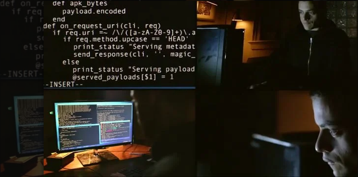

Fale comigo pelo IRC via tor

Seja bem-vindo, este é o primeiro post do meu blog, e vou te ensinar como você pode se conectar comigo via IRC usando uma conexão criptografada via tor.
Welcome
Seja bem-vindo, este é o primeiro post do meu blog, e vou te ensinar como você pode se conectar comigo via IRC usando uma conexão criptografada via tor.
O que é o IRC?
Eu não sou prolixo, então vou explicar resumidamente. IRC é um protocolo de comunicação que nasceu numa época onde a internet era lenta, os computadores não tinham muito espaço e você era cobrado por banda usada da internet. (Imagina quem baixada videos, filmes, jogos, final do mês chorava).